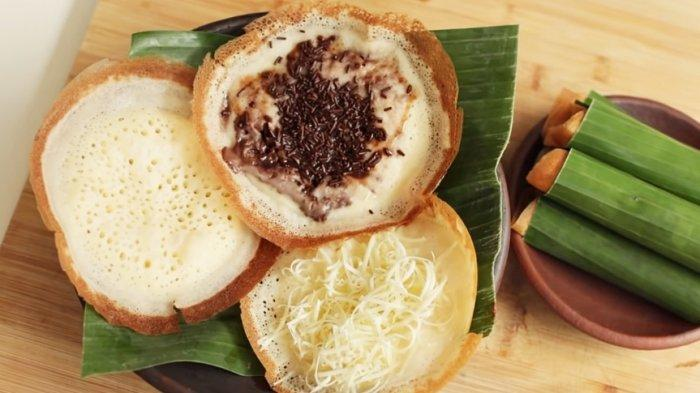

Resep Serabi
Serabi adalah kue tradisional yang populer di berbagai daerah Indonesia. Terbuat dari bahan dasar tepung beras dan kelapa, serabi memiliki tekstur kenyal dengan rasa yang gurih, sering disajikan dengan kuah manis atau gurih.
Bahan-bahan:
- 250 gram tepung beras
- 50 gram kelapa parut kasar
- 1/2 sdt ragi instan
- 1/2 sdt gula pasir
- 200 ml santan
- 1/2 sdt garam
- Minyak untuk menggoreng
Cara Membuat:
- Campurkan tepung beras, kelapa parut, ragi, gula, dan garam dalam satu wadah.
- Tambahkan santan sedikit-sedikit sambil diaduk hingga menjadi adonan yang kental.
- Diamkan adonan selama 1 jam agar ragi mengembang.
- Panaskan cetakan serabi, olesi dengan sedikit minyak.
- Tuang adonan ke dalam cetakan, masak hingga permukaannya berlubang dan matang. Angkat.
- Sajikan serabi dengan kuah manis atau gurih sesuai selera.